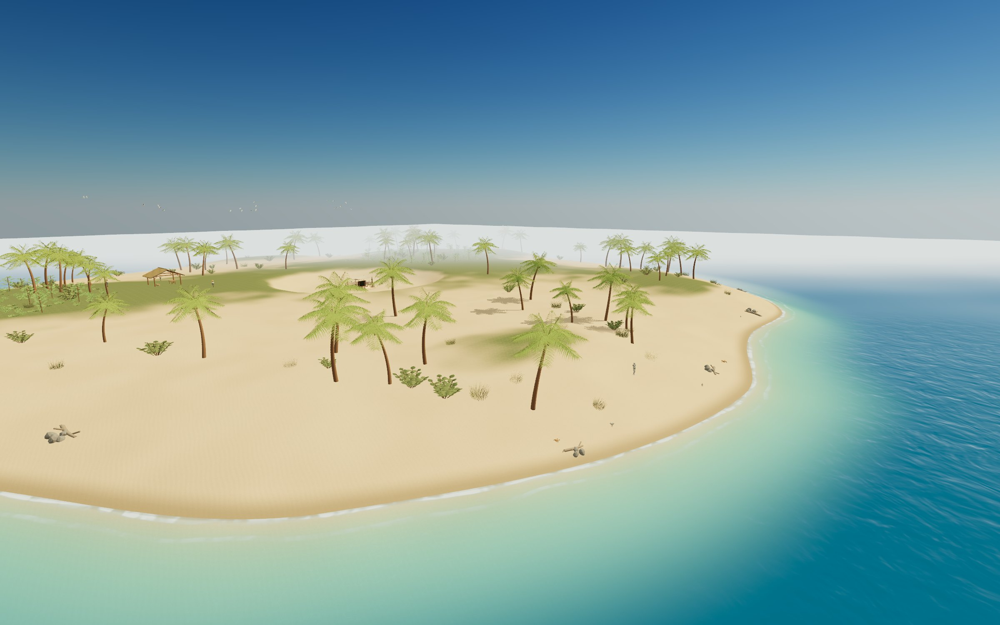
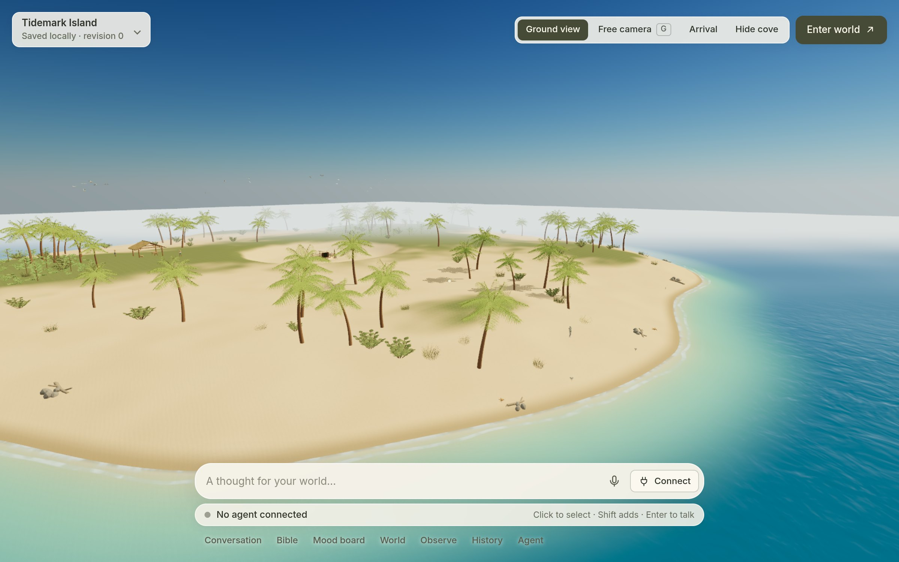
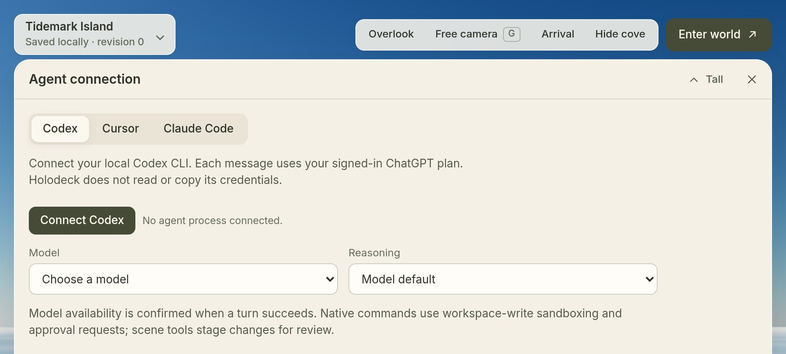

01
BibleThe rules of this place.
A short design document you and your agent both edit: what the world is for, how it should look, and the rules it must keep.
- World name, visual direction and rules
- Your agent must respect accepted rules

Early source prototype
Holodeck is a local workspace where you and your coding agent build 3D worlds together, then explore them on foot, right in the browser.
Enter Tidemark IslandBuild your own
Tidemark Island, rendered live in the browser.
The workspace
Write what a place should feel like, pin a few references, and let your coding agent build it with Kiln assets. Then step inside and judge it on foot.

The real workspace, running locally.
How it works
You set the intent, your agent does the building, and you judge the result by walking it. Each accepted change leaves a saved revision.
01
A short design document you and your agent both edit: what the world is for, how it should look, and the rules it must keep.
02
Pin images, notes and reference files, including what to avoid. The board also stands inside the world, so you can hold the place up against it.

03
Connect Codex, Cursor or Claude Code. It works from the bible and board, and proposes scene, bible and board changes for you to review.

04
Assets come from a separate Kiln workspace as GLBs. Holodeck validates and hot-loads them, then pins each one so a world never shifts under you.

05
Enter in first person to see whether the place works. Every accepted change becomes a revision you can return to, and any revision exports as a static scene like the ones on this page.

Scenes
Exported worlds play directly in your browser. Nothing to install.
Build
Holodeck runs on your machine. Launch creates a cove beside the checkout when that folder is new, starts the local server and opens the world.
git clone https://github.com/instruktlabs/holodeck.gitcd holodecknpm ciInstalls dependencies once. Launch does not download them.node bin/holodeck.mjs launchThen choose Connect → Codex, Cursor or Claude Code.The source is github.com/instruktlabs/holodeck. Code is MIT. The bundled example worlds are CC0. Your own worlds are not automatically CC0.